Si descargas las simulaciones, las marcadas con este icono necesitan un servidor local. Cómo usarlas sin conexión
Matemáticas
Herramientas y visualizaciones matemáticas.
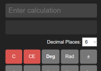
Calculadora Científica
Calculadora avanzada con funciones trigonométricas, logarítmicas y gráficas.
Abrir simulación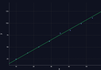
Regresión Lineal Simple
Herramienta estadística para analizar la relación entre dos variables y predecir valores.
Abrir simulación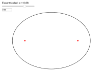
Excentricidad de la Elipse
Visualiza cómo cambia la forma de una elipse al variar su excentricidad.
Abrir simulaciónFísica
Fenómenos fundamentales, de la mecánica a la física moderna.
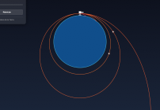
Cañón de Newton
Simulación interactiva del cañón de Newton para explorar la ley de gravitación universal.
Abrir simulación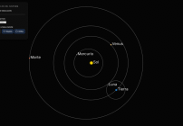
Órbitas en el modelo de Kepler
Visualiza las órbitas de los planetas en el modelo de Kepler.
Abrir simulación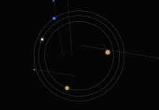
El Sol desaparece
¿Qué pasaría si el Sol desapareciera? Explora la ley de gravitación universal.
Abrir simulación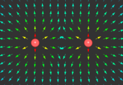
Campo y Potencial Eléctrico
Simulación interactiva de cargas puntuales, líneas de campo y superficies equipotenciales.
Abrir simulación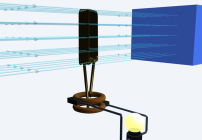
Generador Eléctrico
Simulación 3D de un generador eléctrico y la inducción electromagnética.
Abrir simulación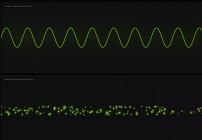
Modelos de la Luz
Explora los modelos ondulatorio y corpuscular de la luz.
Abrir simulación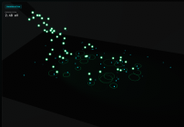
Efecto Fotoeléctrico
Explora el efecto fotoeléctrico de la luz.
Abrir simulación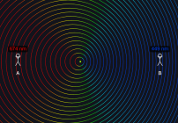
Efecto Doppler de la Luz
Observa el cambio de color (redshift/blueshift) en objetos que se mueven a velocidades relativistas.
Abrir simulación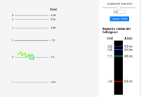
Espectro del Hidrógeno
Calcula las líneas espectrales (Balmer, Lyman) según los saltos cuánticos del electrón.
Abrir simulaciónAstronomía
Observación del cielo y los modelos ptolemaico y copernicano.
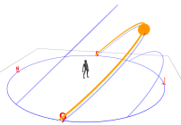
Solsticios y Equinoccios
Entiende la inclinación de la Tierra y su efecto en las estaciones y la duración del día.
Abrir simulación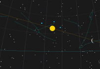
Eclíptica y Planetas
Observa el movimiento aparente del Sol y los planetas a lo largo del año.
Abrir simulación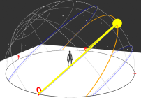
Horizonte Astronómico
Explora la esfera celeste y el sistema de coordenadas horizontales desde cualquier latitud.
Abrir simulación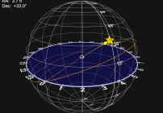
Coordenadas Ecuatoriales
Entiende qué son la Ascensión Recta y la Declinación en el mapa del cielo.
Abrir simulación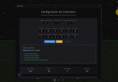
Calendario Astronómico
Construye un calendario a partir de la posición de los planetas y el Sol.
Abrir simulaciónCalendario Lunar
Construye un calendario personalizado y resalta las fases lunares.
Abrir simulación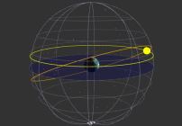
Sol y Esfera Celeste
El recorrido aparente del Sol sobre la esfera celeste según la antigua astronomía.
Abrir simulación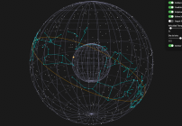
Eclíptica en el modelo ptolemaico
Visualiza la eclíptica en el modelo ptolemaico.
Abrir simulación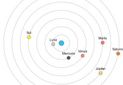
Órbitas en el modelo ptolemaico
Visualiza las órbitas planetarias en el modelo ptolemaico.
Abrir simulación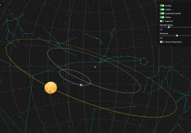
Movimiento retrógrado en el modelo ptolemaico
Visualiza en 3D cómo los epiciclos producen el movimiento retrógrado de los planetas.
Abrir simulación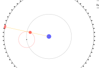
Deferentes y Epiciclos
Mecanismo matemático antiguo para explicar el movimiento retrógrado de los planetas.
Abrir simulación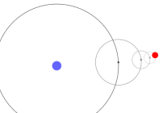
Múltiples Epiciclos
Simulación de sistemas complejos de epiciclos sobre epiciclos («epicicloides»).
Abrir simulación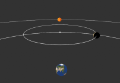
Fases de Venus en el modelo ptolemaico
Predicción de las fases de Venus según el modelo geocéntrico.
Abrir simulación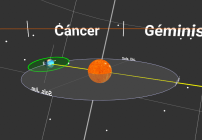
Sistema Tierra-Sol
Dinámica orbital básica entre la Tierra y el Sol.
Abrir simulación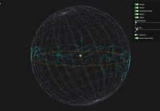
Eclíptica en el modelo copernicano
Visualiza cómo cambia la posición aparente del Sol en el modelo copernicano.
Abrir simulación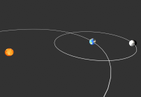
Fases Lunares
Simulación 3D de la posición Sol-Tierra-Luna y cómo genera las fases lunares vistas desde la Tierra.
Abrir simulación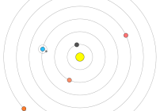
Órbitas Copernicanas
Visualización del sistema solar con el Sol en el centro y órbitas circulares.
Abrir simulación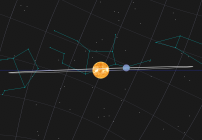
Movimiento Retrógrado Aparente
Explicación elegante del aparente retroceso planetario desde una perspectiva heliocéntrica.
Abrir simulación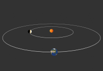
Fases de Venus en el modelo copernicano
Cómo el modelo heliocéntrico predice correctamente las fases de Venus.
Abrir simulación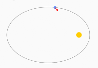
Órbitas Elípticas
Las leyes de Kepler y el movimiento real de los planetas en elipses.
Abrir simulaciónAstrofísica
Del sistema solar a las estrellas.
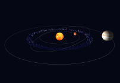
Creador de Sistema Solar
Sandbox gravitacional: lanza planetas y observa cómo interactúan sus órbitas.
Abrir simulación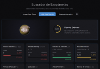
Buscador de Exoplanetas
Busca exoplanetas en nuestra galaxia y descubre sus características.
Abrir simulación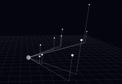
Distancias Estelares
Visualización 3D de las estrellas más cercanas al Sol. ¡Navega entre ellas!
Abrir simulación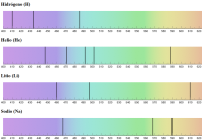
Espectros Comunes
Catálogo interactivo de espectros de emisión y absorción de diversos elementos.
Abrir simulación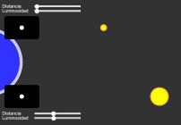
Distancia y Luminosidad
Cómo la luz de una estrella disminuye con el cuadrado de la distancia.
Abrir simulación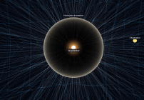
Agujero Negro
Visualiza las características de un agujero negro.
Abrir simulaciónCosmología
El universo a gran escala.
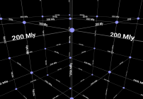
Expansión del Universo
Simula la Ley de Hubble y cómo el espacio mismo se estira arrastrando a las galaxias.
Abrir simulación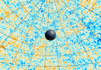
Radiación Cósmica de Fondo
Visualiza la radiación cósmica de fondo en 3D.
Abrir simulación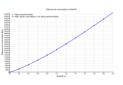
Parámetros Cosmológicos
Determina los parámetros de densidad a partir de datos de SNIa.
Abrir simulación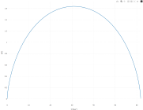
Evolución del Universo
Línea de tiempo cósmica desde el Big Bang hasta la actualidad.
Abrir simulaciónBig Bang
Simulador interactivo del Big Bang.
Abrir simulaciónFísica de Altas Energías
Detectores de partículas y neutrinos.
No hay simulaciones que coincidan con tu búsqueda.